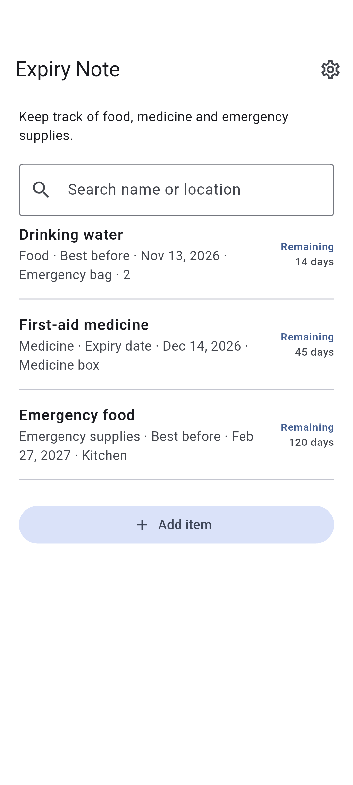

DOTNULL / Expiry Note
Know what expires next.
Keep track of food, medicine and emergency supplies.
The app is in development.
About the app ↓
HOW IT WORKS
About the app
01
Add a name and date
02
Choose the date type
03
See the nearest dates first
About the app
- Item category
- Food · Medicine · Emergency supplies · Other
- Storage location (optional)
- Search name or location
- Date type
- Best before · Use by · Expiry date
- Expiry reminders
- Reminders around 9:00, 3 months and 1 month before and on the expiry date. Permission is required. The next 60 reminder dates are scheduled; open the app regularly to refresh them.
Privacy
Entries are stored on your device and can be viewed offline.
Data stored on your device may be lost if the app is deleted or the device fails.
Your items are stored on this device. Ads may use data as described by the ad provider.
Check the date printed on each product.